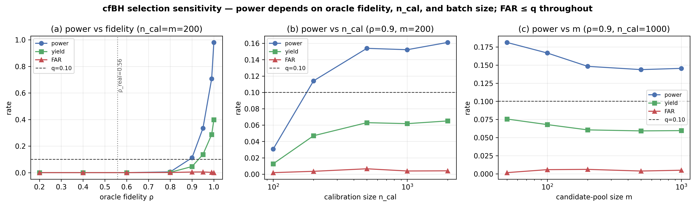
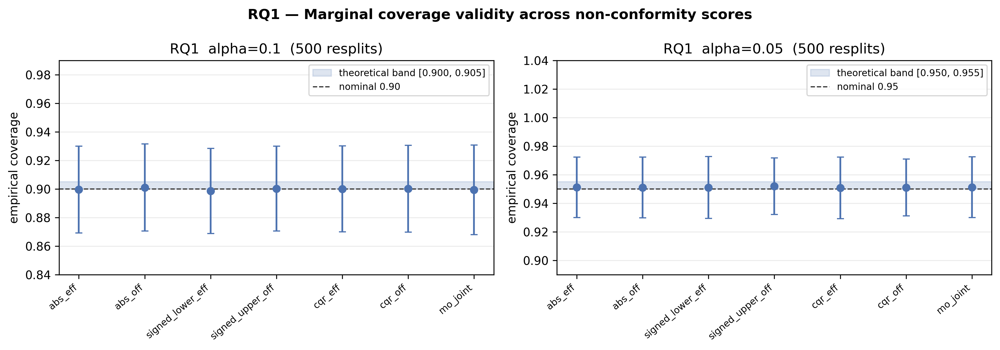

Architecture

The generator and property oracles are opaque, pluggable components; ConformalGen converts their outputs into calibrated bounds and a FAR-controlled accept/reject decision.
A model-agnostic conformal-prediction wrapper that turns any sequence generator's point predictions into guaranteed bounds and a FAR-controlled acceptance decision — with the honesty caveats stated up front.
Generative models propose novel biological sequences — CRISPR/Cas9 sgRNAs among them — that a learned predictor scores as efficient on-target and safe off-target. Deployment needs calibrated confidence that a candidate's oracle-defined efficacy is at least a design threshold and its off-target burden at most a safety threshold. Point predictions give no such control; generative sampling shifts the candidate distribution; and the two properties must be controlled jointly.
ConformalGen wraps whatever predictors you have in split-conformal prediction, giving finite-sample, distribution-free coverage under exchangeability:
All guarantees are marginal and with respect to the surrogate oracle labels, not biological ground truth — a limitation we audit explicitly below.
A single standardized $\infty$-norm score $s_{\mathrm{mo}}=\max\{a,b\}$ over the two directional residuals yields joint $(1-\alpha)$ coverage of both objectives at once:
No Bonferroni, no independence assumption — a per-axis union bound would give only $1-2\alpha$. (A direct application of split-conformal validity, not a new theorem.)
Reduce the criterion to a scalar target $T(y)=\min\{(y_{\mathrm{eff}}-\tau_{\mathrm{eff}})/s_{\mathrm{eff}},\,(\log(1{+}\tau_{\mathrm{off}})-\log(1{+}y_{\mathrm{off}}))/s_{\mathrm{off}}\}$, so $\mathrm{OK}(y)\!\iff\!T(y)\ge0$. With monotone score $V(x,t)=t-\hat T(x)$ and full-calibration conformal $p$-values
Benjamini–Hochberg controls the False Acceptance Rate (an application-specific FDR-type criterion) at $\mathrm{FAR}\le q$ in finite samples (Jin & Candès 2023).
The generator and property oracles are opaque, pluggable components; ConformalGen converts their outputs into calibrated bounds and a FAR-controlled accept/reject decision.
Mean over 500 resplits; only conformal reaches nominal.
| Interval method | Eff cov | Off cov |
|---|---|---|
| Parametric Gaussian | 0.670 | 0.610 |
| Uncalibrated QR | 0.860 | 0.835 |
| Split-conformal | 0.935 | 0.915 |
Nominal 0.90 (α=0.10). All 4 scores within ±0.002 of nominal across resplits.
Pooled calibration under-covers the heavy off-target tail; Mondrian restores it.
| Off-target stratum | Pooled cov | Mondrian cov |
|---|---|---|
| low | 0.952 | 0.905 |
| med | 0.985 | 0.970 |
| high (heavy tail) | 0.831 | 0.859 |
α=0.10, tercile stratification by predicted off-target magnitude.
FAR ≤ q in every configuration (validity is unconditional). Selection power tracks oracle fidelity ρ — reaching a ceiling only at a perfect oracle, while our real surrogate (ρ ≈ 0.56) is underpowered. A calibration-size sweep rules out a finite-sample cause.
| Oracle fidelity ρ | 0.8 | 0.9 | 0.95 | 0.99 | 1.0 (perfect) |
|---|---|---|---|---|---|
| Power (recall of true-OK) | 0.006 | 0.112 | 0.334 | 0.707 | 0.980 |
| FAR (target ≤ 0.10) | 0.001 | 0.004 | 0.005 | 0.002 | 0.000 |


Coverage is w.r.t. a surrogate off-target oracle (GRCh38, SpCas9 NGG, Hamming ≤ 3, no indels), never used in calibration.
The surrogate is specific but insensitive — guarantees are honest as oracle-label coverage, not biological truth.
git clone https://github.com/malekpouri/conformal-genomics.git cd conformal-genomics python -m venv venv && source venv/bin/activate pip install -r requirements.txt
./reproduce.sh # Stages 01–09 + 38 tests
from src.selection import ConformalSelector sel = ConformalSelector(tau_eff=45., tau_off=20.)\ .fit(train_seq, train_eff, train_off) sel.calibrate(cal_seq, cal_eff, cal_off) # FAR <= q, plus yield / precision / power print(sel.evaluate(test_seq, test_eff, test_off, q=0.10))
Any generator is a drop-in via the GenericSequenceGenerator interface.
© Mohammad Malekpouri. Free to use, modify, and distribute with attribution. No warranty.
@software{conformalgen,
author = {Malekpouri, Mohammad},
title = {ConformalGen: Distribution-Free
Uncertainty Quantification for
Generative Genomic Design},
year = {2026},
url = {https://github.com/malekpouri/conformal-genomics},
license = {MIT}
}